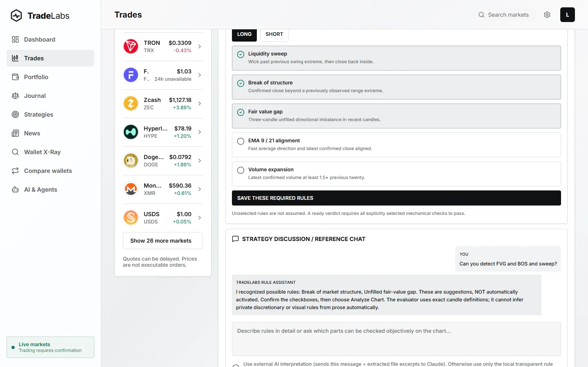

TradeLabs
TradeLabs is a trading app I built for myself. When I traded crypto, my charts, research and trade history were spread across different sites, and looking back at a trade meant jumping between tabs.
Now it's all in one place. I can open any market, read research next to the chart and go back through my own trades to see what actually happened. It never trades on its own; every trade needs my click.
Personal tool · in use by me, not publicWhy I built it
When I was trading crypto, everything was spread out. Charts were in one tab, news in another, and my trade history somewhere else again.
Looking back at a trade meant jumping between sites, and by the time I'd found everything, I'd usually forgotten why I made the trade in the first place. I wanted one place where I could see the whole story.
What it does
TradeLabs puts all of that in one app. I can open any market and timeframe, read research and news next to the chart, and keep a journal of my own trades.
When I look back at a trade, I see the chart, what I was reading at the time and what happened afterwards. It never trades on its own. Every trade needs my click.
How it's built
The app is built with React Native and Expo, so the same code runs on the web and on a phone. A Python backend pulls market data from public sources and does the calculations.
Sample data is always clearly labelled, so a demo never gets mistaken for real numbers.
Where it stands
It's a tool I built for myself, not a product, so it isn't public.
It's on this page because it taught me a lot: working with live data, keeping a busy screen easy to read, and being strict about what's real and what's a demo.

